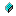

The fields of the Symbol class are listed below. For a complete list of Symbol class members, see the Symbol Members topic.
| left | **************************** The data passed to parser ***************************** |
| parse_state | The parse state to be recorded on the parse stack with this symbol. This field is for the convenience of the parser and shouldn't be modified except by the parser. |
| right | **************************** The data passed to parser ***************************** |
| sym | The symbol number of the terminal or non terminal being represented |
| Value |
Symbol Class | CUP.runtime Namespace